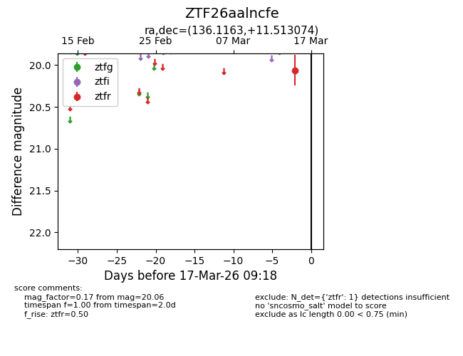
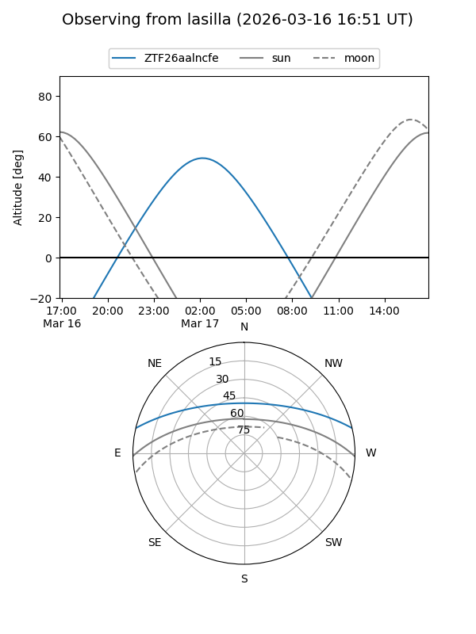
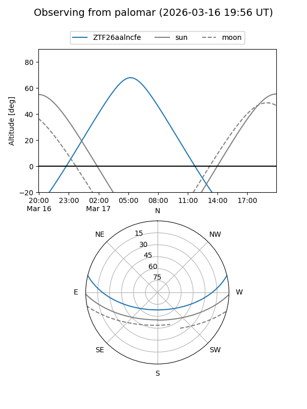

ZTF26aalncfe
Target ZTF26aalncfe at 2026-03-17 09:20
Aliases and brokers:
FINK: link
Lasair: link
ALeRCE: link
alt names
ZTF26aalncfe (ztf,fink_ztf)
Coordinates:
equatorial (ra, dec) = 136.1163,+11.51307
equatorial (HMS+DMS) = 09:04:27.92,+11:30:47.07
galactic (l, b) = (217.6338,+34.69820)
Flags:
Photometry:
last ztfr=20.06
1 ztfr detections
Lightcurve

Visibility


Additional plots